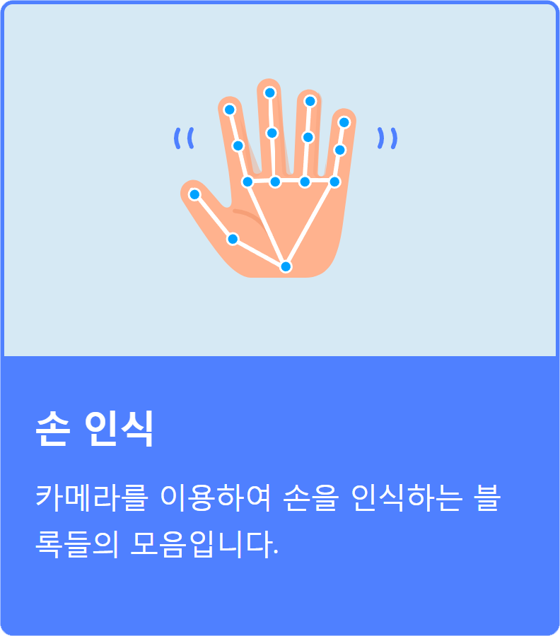
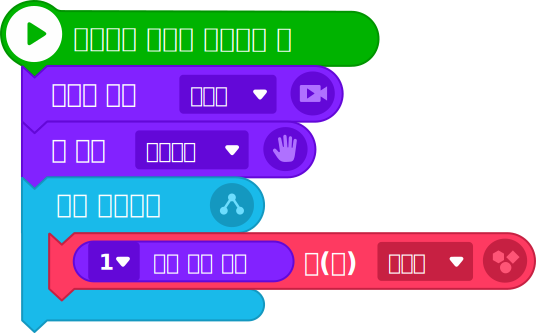
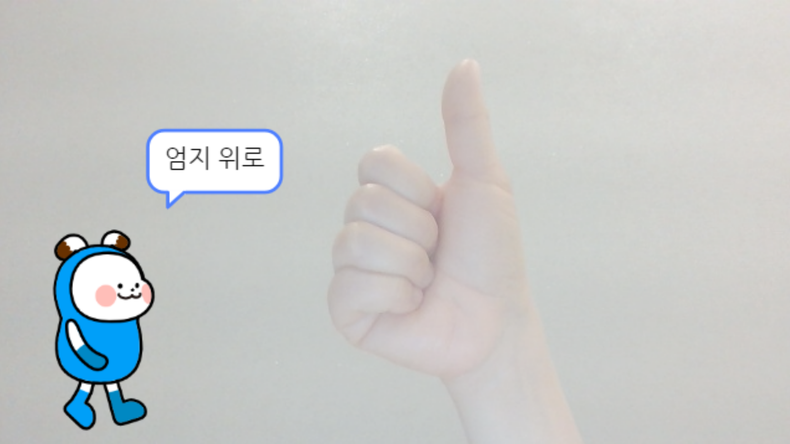
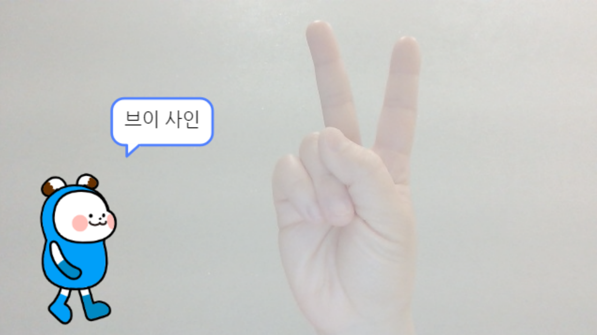
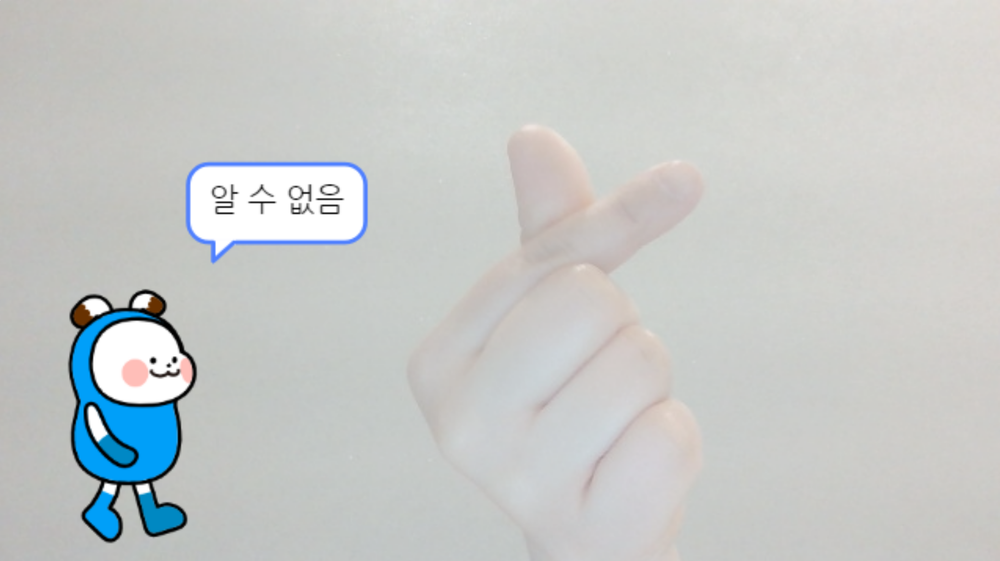
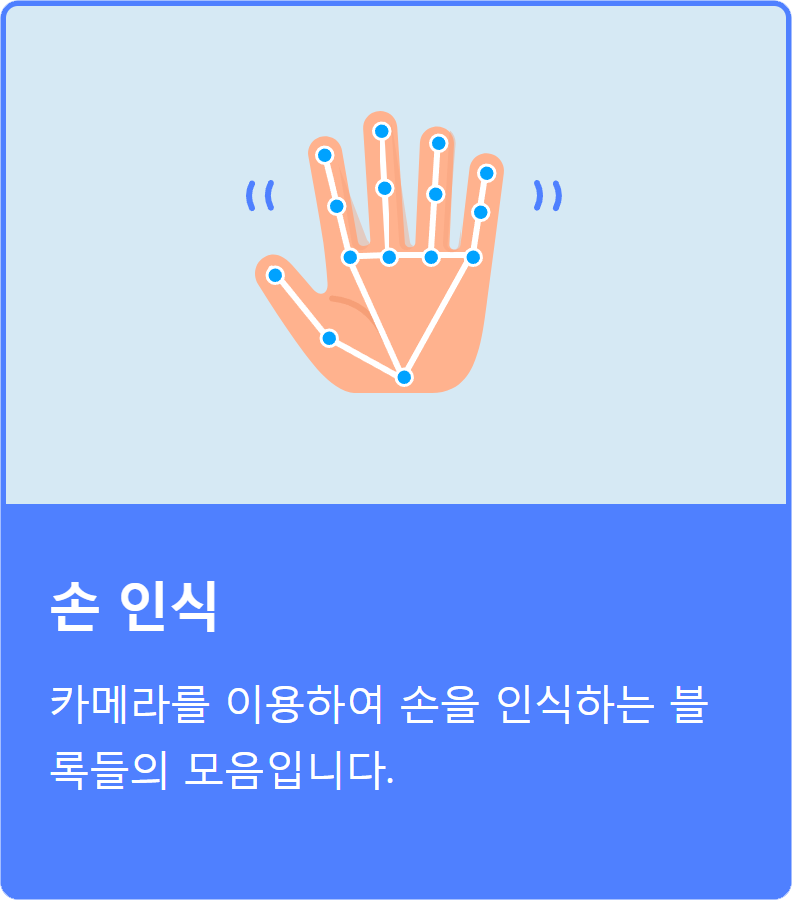
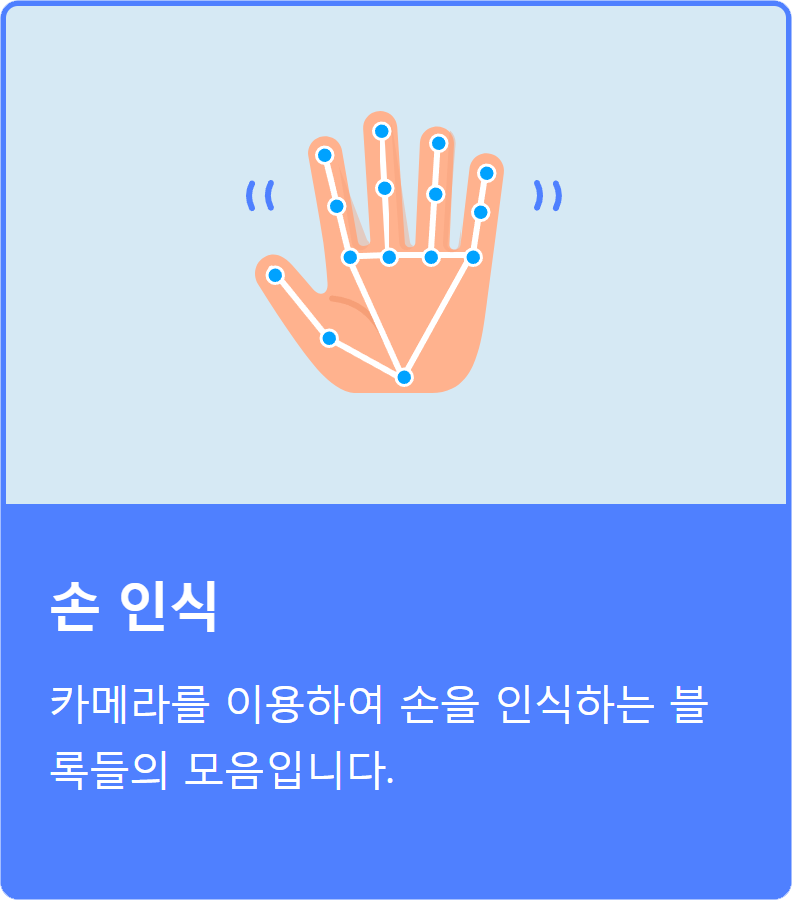
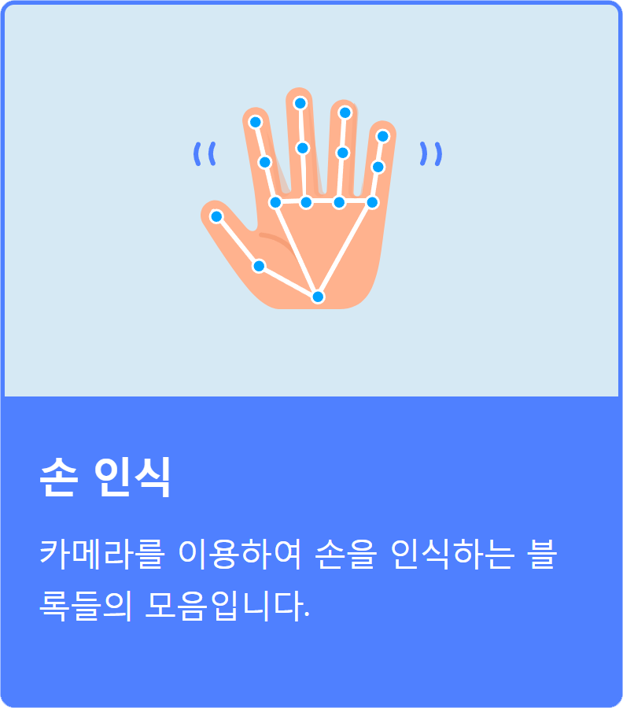
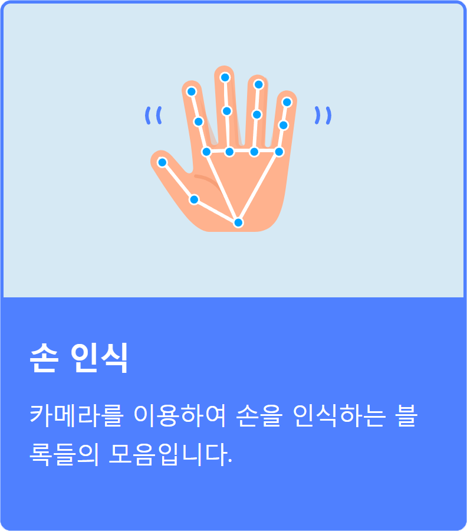

인공지능 체험하기
엔트리의 손 인식 인공지능 블록을 활용하여 ‘엄지 위로’, ‘브이 사인’, ‘사랑해’ 손동작 인식을 체험해 보자.
프로그램 결과 미리 보기
1
손 인식 인공지능 블록 불러오기
①
인공지능 블록 불러오기
②
인공지능 블록 선택하기

2
프로그램 작성하기
다음의 블록을 연결하여 손동작의 모양을 말하는 프로그램을 작성해 보자.
프로그래밍 작성하기
오브젝트
명령 블럭

3
손동작 인식 결과 확인하기
프로그램을 실행하여 실행 결과를 확인해 보자.
카메라에 비춰 ‘엄지 위로’, ‘브이 사인’, ‘사랑해’ 손동작을 해 보고, 손동작을 잘 인식하는지 결과를 확인한다.



Tip
일반적으로 사람에게 소통하는 손동작은 엔트리에 학습되어 있지 않고 수어 동작만 학습되어 있다.
 


